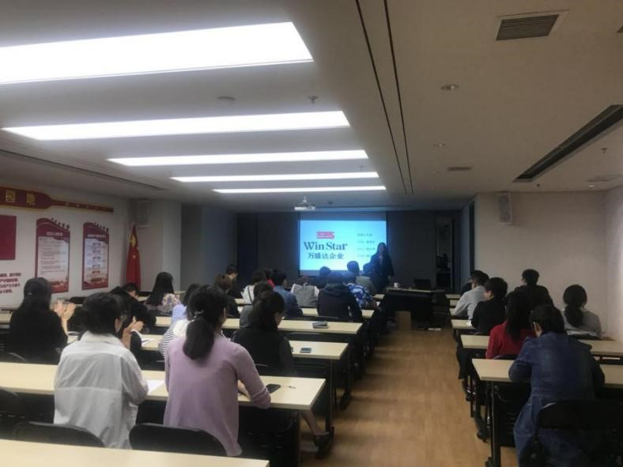
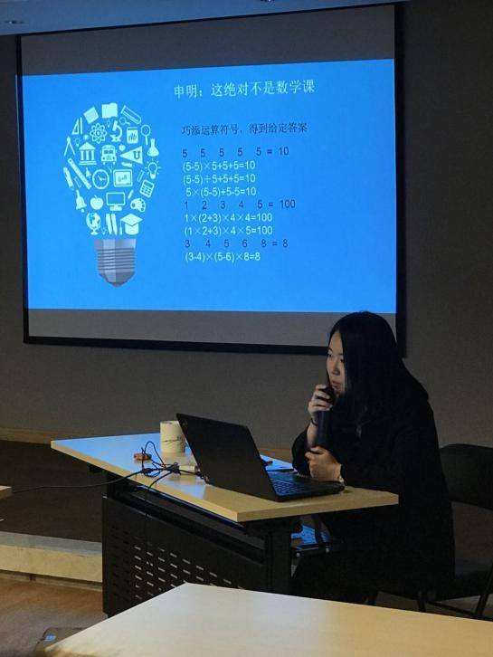

社保培训课现场
相信大家对于“社保”这个词并不陌生，瞅瞅每个月的工资条，总有那么一部分“血汗”是被划到“养老保险”、“医疗保险”……这些名目下的。但谈起社保怎么用这些细节，甭管是刚毕业走上工作岗位的新人，还是驰骋职场多年的“老人”，都难免一头雾水，解释不清。
社保关乎我们每个职场人的切身利益，这其中的细节一定要搞明白！
2018年4月1日下午3点，社保培训课在陕西万盛达企业培训教室里如期举行。首堂培训课由行政人事部发起，主要围绕社保政策、社保应用、福利享受等基本社保常识面向全体员工进行专题培训。

主讲人——行政人事部童锦乐
积极互动
随着时间的推移，一盆盆错落有致、造型各异的插花作品展现在大家眼前，或清新淡雅，或高端大气，或色彩绚烂，或新颖创意，这些巧思也收获了花艺老师由衷的赞叹！
认真听讲
课堂初始，几道脑洞算术题巧妙地将大家的注意力引导到培训课件上。主讲人童锦乐演讲风格生动自然，社保包含哪些险种、缴纳比例和缴纳年限是多少、公积金如何支取、医保卡怎么用、遇到工伤几步走……这些原本枯燥晦涩的知识通过讲故事、举事例的方式从她口中娓娓道来，在一次次互动中，例如提笔算算案例中的主人公能领多少养老金，增加了大家对养老金待遇计算的兴趣；通过列举发生在我们身边的员工案例，教大家明白了医保卡在何种情况下千万不能用以及遭遇工伤后应该怎么办……
这堂社保培训课提高了参训员工对个人社保的关注度，大家对社保常识有了更准确的理解和把握，得到了大家的普遍认可。